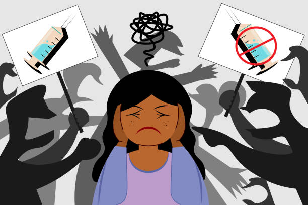
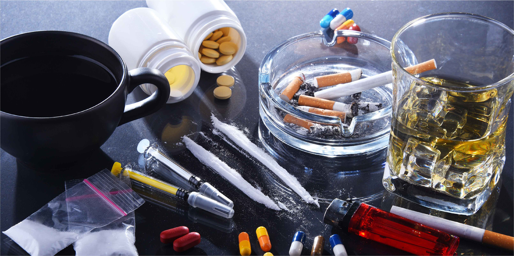
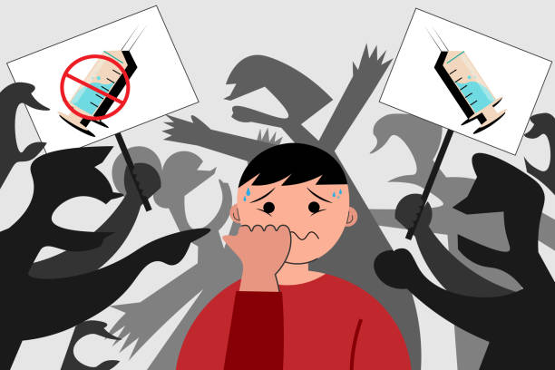

ยาเสพติดให้โทษ คืออะไร?
พระราชบัญญัติยาเสพติดให้โทษ พ.ศ. 2522 ซึ่งเป็นกฎหมายที่ควบคุมยาเสพติดให้โทษของประเทศไทย ได้ให้นิยามของยาเสพติดให้โทษไว้ว่า หมายถึง สารเคมีหรือวัตถุใดๆ ซึ่งเมื่อเสพเข้าสู่ร่างกายไม่ว่าจะโดยวิธีใดตาม เช่น รับประทาน สูบ ดมหรือฉีดแล้ว จะก่อให้เกิดผลต่อร่างกายและจิตใจที่สำคัญ 4 ประการ คือ
1. มีความต้องการเสพสารนั้นอย่างรุนแรงทั้งร่างกายและจิตใจ
2. ต้องเพิ่มขนาดหรือปริมาณการเสพสารนั้นมากขึ้นเป็นลำดับ
3. เมื่อหยุดเสพสารนั้นจะเกิดอาการถอนยา
4. สุขภาพของผู้เสพสารนั้นเป็นเวลานานจะทรุดโทรมลง
ยาเสพติดที่แพร่ระบาดในประเทศไทย
- ยาบ้า
- เฮโรอีนและอนุพันธ์ของฝิ่นชนิดอื่นๆ
- โคเคน
- ยาอี
- ยาแก้ไอผสมโคเดอีน
- กัญชา
สาเหตุของการติดยาเสพติด
ปัจจัยที่ทำให้เกิดการติดยาเสพติด มี 3 ประการ คือ
1. ตัวสารและฤทธิ์ของสาร สารที่ก่อให้เกิดการเสพติด เป็นสารที่ออกฤทธิ์ต่อระบบประสาท เช่น เมทแอมเฟตามีน (ยาบ้า) เฮโรอีน เป็นต้น เมื่อผู้เสพเริ่มทดลองใช้และได้รับฤทธิ์ของยาเสพติดแล้วพึงพอใจก็จะเสพซ้ำจนเกิดการติดยาได้
2. ตัวผู้เสพ การที่ผู้เสพหันไปเสพยาเสพติดนั้น อาจมีสาเหตุมาจาก
– สภาพร่างกาย เช่น ผู้ที่มีอาการป่วยซึ่งต้องใช้ยาเสพติดในการบำบัดรักษา จนนำไปสู่การติดยาเสพติดนั้น เป็นต้น
– สภาพจิตใจ ผู้ที่มีอารมณ์วู่วาม เปลี่ยนแปลงเร็ว ขาดความมั่นใจ มักจะหันเข้าหาสิ่งใดสิ่งหนึ่งเป็นสิ่งยึดเหนี่ยว ส่วนผู้ที่มีสุขภาพจิตรวนเร มีความวิตกกังวลตลอดเวลา ก็จะถูกชักจูงให้เสพยาเสพติดได้ง่าย และผู้ที่ขาดความอบอุ่น หรือมีปัญหาต่างๆ เช่น ปัญหาเศรษฐกิจ การงาน ก็จะใช้สิ่งเสพติดเป็นเครื่องปลอบใจดับความว้าวุ่นทางจิตใจให้น้อยลง
|  |  |  |